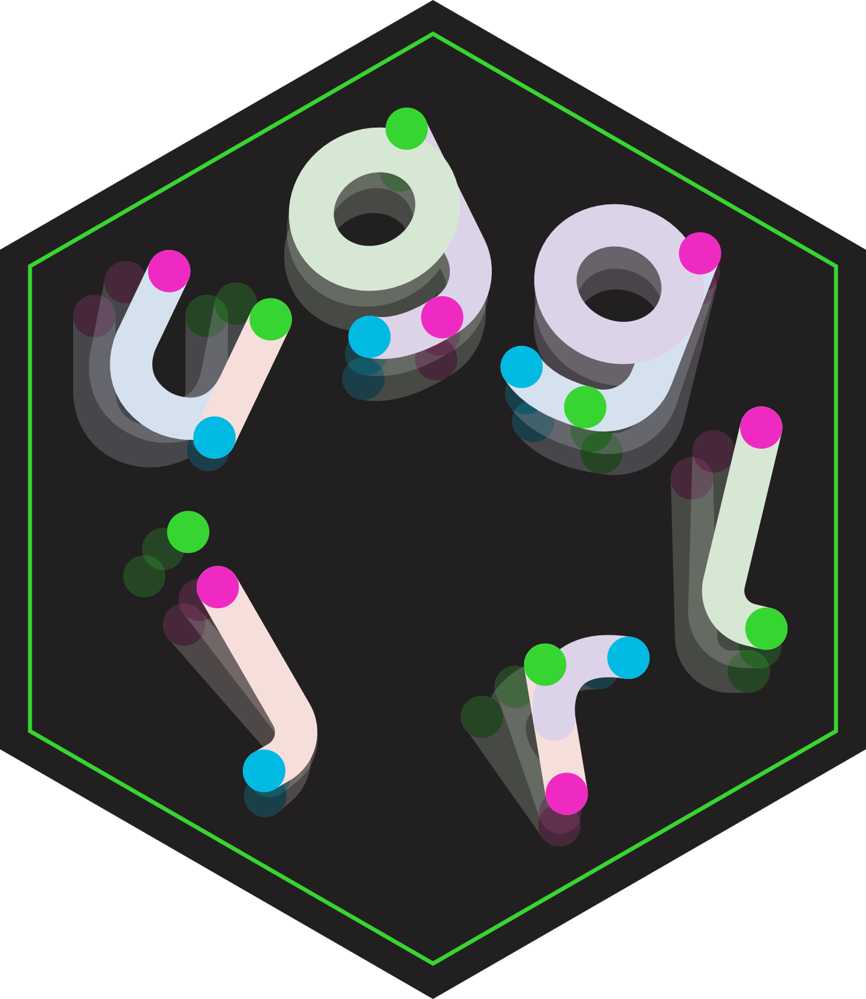
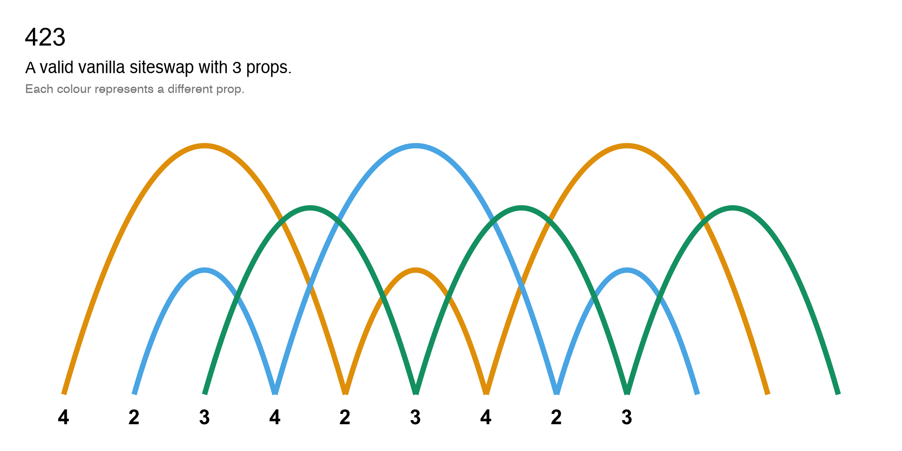
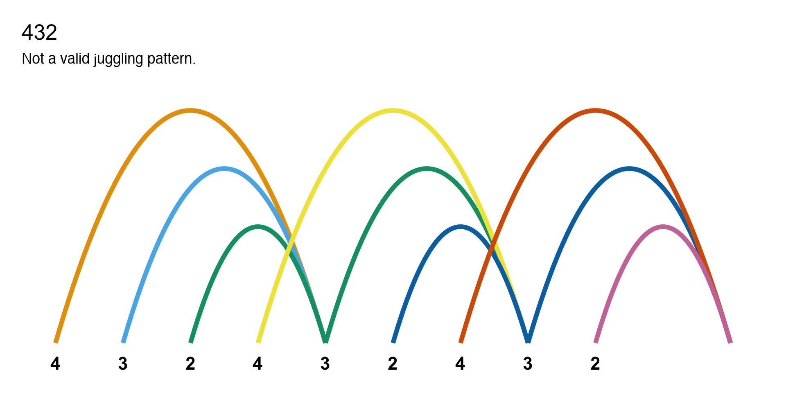
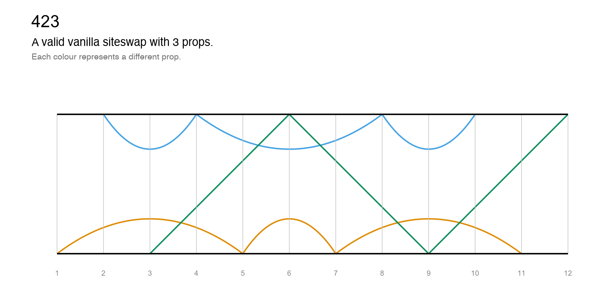
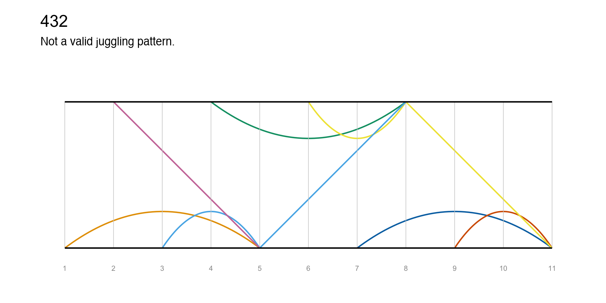

✔ '423' is valid vanilla siteswapℹ It uses 3 propsℹ It is symmetrical with period 3June 9, 2026

timeline
timeline
ladder
ladder
A wrapper to the JugglingLab GIF server.
In RStudio/Positron, by default the GIF will be displayed in the Viewer pane. Set a path to save the file.
Siteswap
├── vanillaSiteswap
├── synchronousSiteswap
├── multiplexSiteswap
├── synchronousMultiplexSiteswap
└── passingSiteswapsiteswap <- function(sequence) {
if (is_vanilla_notation(sequence)) {
vanillaSiteswap(sequence)
} else if (is_sync_notation(sequence)) {
synchronousSiteswap(sequence)
...
} else {
cli::cli_abort(
"Not valid vanilla, synchronous,..., siteswap notation.",
class = "jugglr_error_not_valid_siteswap"
)
}
}SiteswapSiteswap with property validatorvanillaSiteswap with computed properties and class validatorvanillaSiteswap <- new_class(
"vanillaSiteswap",
properties = list(
throws = new_property(
class = class_integer,
getter = function(self) {
get_throws(self@sequence) # e.g. "423" -> c(4, 2, 3)
}
),
n_props = new_property(
class = class_numeric,
getter = function(self) {
mean(self@throws)
}
),
valid = new_property(
class = class_logical,
getter = function(self) {
can_throw(self@throws) && is_whole_number(self@n_props)
}
)
),
validator = function(self) {
if (!is_vanilla_notation(self@sequence)) {
"@sequence must only contain digits and letters."
}
},
parent = Siteswap
)<vanillaSiteswap>
@ sequence: chr "423"
@ throws : num [1:3] 4 2 3
@ n_props : num 3
@ valid : logi TRUENote
This is the simplied version of the vanillaSiteswap class as defined in the slide.
The full version in the jugglr package has additional properties and a print method (seen earlier!)
roxygen2 8.0.0 provides first-class support for S7.
In DESCRIPTION:
Config/roxygen2/version: 8.0.0
Config/roxygen2/markdown: TRUEColour classes for text and highlights:
neon-green
neon-blue
neon-pink
neon-green-hl
neon-blue-hl
neon-pink-hl
neon-coral-hl
neon-orange-hl
neon-yellow-hl
Colour classes for text and highlights:
pastel-purple
pastel-pink
pastel-green
pastel-blue
pastel-pink-hl
pastel-green-hl
pastel-blue-hl
pastel-purple-hl
Use class .col-box-{color} to apply colour box styling
Box 1: pink
Default height is 450px
Box 2: blue
Box 3: green
Colour box styling can be applied to entire columns
This has height 600px
Or to divs within columns to create stacks
This div has height 300px
Note
A note
Warning
A warning
Important
Something important
Tip
This is a good idea
Caution
Be careful about doing this
library(dplyr)
penguins %>%
mutate(
long_flipper = case_when(
species == "Adelie" & flipper_len > 195 ~ TRUE,
species == "Chinstrap" & flipper_len > 200 ~ TRUE,
species == "Gentoo" & flipper_len > 225 ~ TRUE,
TRUE ~ FALSE
)
) %>%
mutate(
body_mass_kg = body_mass / 1000,
bill_len_cm = bill_len / 10,
bill_dep_cm = bill_dep / 10
)